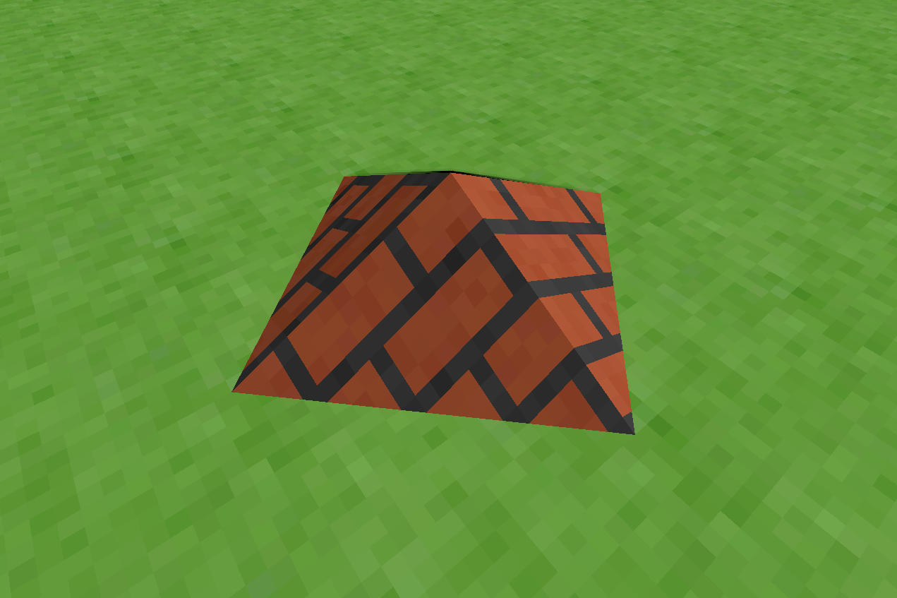

Ben Phillips - Official Website
| Home | About Me | My Projects | Game Devblog | Demos | Music Stuff |
|---|
Game Devblog
Introduction Post
June 2025
I'm working on a game engine to use in future indie games that I want to develop in my free time. I want this page to be a blog of sorts where I can talk about my progress and any interesting designs or ideas I implement into the engine. It's written in Rust and OpenGL, and only depends on the bare minimum set of basic crates to create a cross-platform application, since I prefer to design more of the architecture myself. Also, I have recently made the repo private in case I want to sell future games that use it.
The core idea in the engine right now is that it's a voxel engine, but allows voxels to include a sloped face in any direction. A robust physics system allows physics objects to interact with these slopes just as reliably as aligned voxel edges, which opens up a lot of possibilities for level design.
Development is early and inconsistent so I can't predict how often updates will happen, but I'll share this capture in the meantime. It shows a small pyramid made from four sloped voxels. It also has complete physics interactions, but the picture doesn't show that.